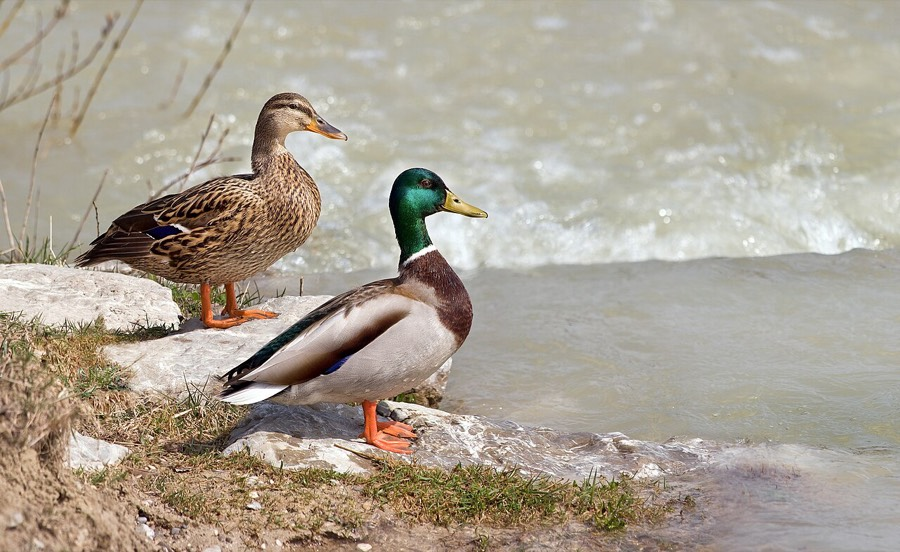
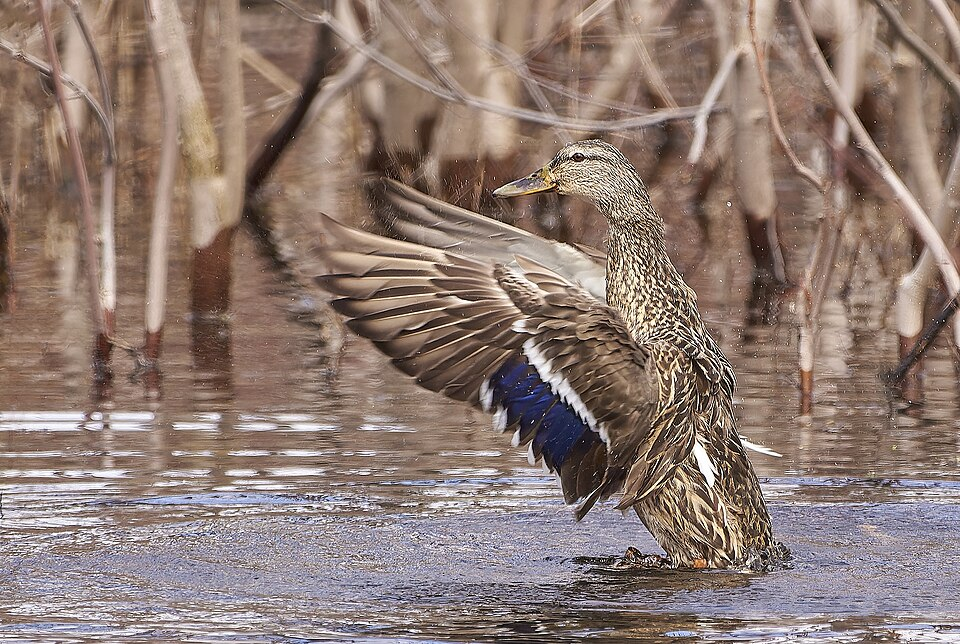

Mallard
Anas platyrhynchos


Listen
Call (female): a 17-second clip, cut from a 17-second recording (trimmed, with a short fade-out, and saved as a small MP3), so it plays without an internet connection. Recording by Jonathon Jongsma, CC BY-SA 3.0, on Wikimedia Commons, where the whole recording is (an internet connection is needed to open it).
- Kind
- bird
- Native to Vermont
- yes
- Legal status
- State rank S4B, S5N (Vermont Breeding Bird Atlas): breeds across the state and stays through winter on open water. (checked 2026-11-01)
Names
Mallard (Anas platyrhynchos).
Range and habitat
Statewide: the Atlas says it has expanded into all regions, increasing by 121 percent between atlases (70 to 155 blocks), and calls it a habitat generalist that can nest almost anywhere near water. The Champlain Valley checklist lists it in all four seasons. Audubon: marshes, wooded swamps, grain fields, ponds, rivers, lakes and city parks.
How to identify (by season; look-alikes and the key difference)
20 inches to 2 feet 2 inches long, 2 to 3.5 pounds. The male has a green head, yellow bill, white neck ring, reddish chest and gray body; the female is mottled brown with an orange bill marked with black. Both have a blue wing patch with white borders. Voice: the female gives the familiar loud quack; the male soft, reedy notes (Audubon). Hybrids with American black ducks occur in the Northeast (American Black Duck).
Through the year
Dates are typical for Vermont and shift with elevation and year; "approximate" means the source gave a season and the dates are a translation of it.
| When | What | Look for | What to do | Dates |
|---|---|---|---|---|
| Apr 1 to May 6 | nesting (watch) | A nest with eggs was found on 1 May and a female with young on 6 May, which suggests some clutches are completed in early April (Atlas). | approximate |
Signs on the land (tracks, scat, browse, nests, holes, calls)
Hens with broods of ducklings: more than 80 percent of the Atlas's breeding confirmations for mallards were females with broods.
Role in the forest (what it eats, what eats it, what it needs)
Mostly plants: seeds, stems and roots of sedges, grasses, pondweeds and smartweeds, acorns and waste grain, plus insects, tadpoles, small fish and earthworms; ducklings eat mostly aquatic insects (Audubon). The nest is a shallow bowl of plant material lined with down, usually on the ground in concealing vegetation, sometimes on a stump, in a tree hollow or in a basket above water, and can be more than a mile from water; 7 to 13 eggs, incubated 23 to 30 days (Audubon). Mallards are partial migrants travelling in mixed flocks (Audubon).
What helps it thrive (light, soil, shelter, food and the trees it uses)
Almost any water: the Atlas calls it a generalist. Concealing vegetation near water for the nest and shallow water with seeds and aquatic insects for feeding. The Atlas says no management is recommended at present.
Managing for it (habitat practices) and living with it (conflicts and damage)
The Atlas gives no current recommendation. Ducks, geese and mergansers have hunting seasons set each year by Vermont Fish & Wildlife in three zones (Lake Champlain, Interior Vermont and Connecticut River). The 2024-25 dates and bag limits are in the Department's 2024 Waterfowl Program Legislative Report; they change each year, so check the current Vermont hunting regulations before acting on them. The 2024-25 daily limit of 6 ducks could include no more than 4 mallards (only 2 of them hens). See Waterfowl and Migration in Vermont for the Vermont season table, where to watch, and what helps waterfowl on your land.
Legal status
Native birds are covered by the federal Migratory Bird Treaty Act, which prohibits taking (killing, capturing, selling, trading and transport are named) protected migratory birds without prior authorization (U.S. The Act applies to native species named in the treaties (50 CFR 10.13).
Sources
- Vermont Center for Ecostudies, Vermont Breeding Bird Atlas, Mallard: http://val.vtecostudies.org/projects/vermont-breeding-bird-atlas/mallard/
- Second Vermont Breeding Bird Atlas, Mallard account: https://media.vtecostudies.org/wp-content/uploads/2026/08/03142059/Mallard_vbba2.pdf
- Audubon, Mallard: https://www.audubon.org/field-guide/bird/mallard
- Vermont Fish & Wildlife, Central Champlain Valley WMAs checklist: https://vtfishandwildlife.com/sites/fishandwildlife/files/documents/WatchWildlife/Champlain-Valley-WMA-Checklist.pdf
Vermont Woodland Owner's Reference, built 2026-11-11. Rules and dates here are summaries, not legal advice; dates shift with elevation and year. Photo and recording credits · The text is by Loop Works, CC BY 4.0 (pictures and recordings keep their own licenses)